ホーム → 補論 → 文法 → 日本人のための日本語 → 日本人のため：6
話者が話そうとする事柄が過去に起きたことか、現在起きていることか、これから起きることかといったことを示す文法手段をテンスと呼びます。日本語では時制と訳されます。述語のかたちが、現在や未来の事態では「～る」、過去の事態では「～た」となることが多いため、ル形、タ形と呼ばれます。たとえば、「明日友達とスペイン料理を食べる」はル形、「昨日コンビニで雑誌を買った」はタ形という具合です。すべての述語が「～る」「～た」とはなりませんが、代表名としてル形、タ形と呼ばれます。述語によってはまったく異なる形式になりますので、一覧でご紹介しましょう。
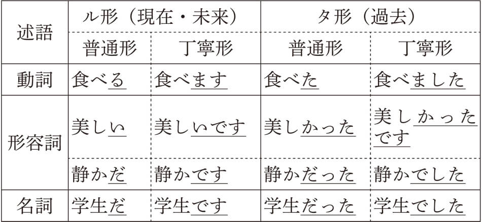これらの表現の下線を引いた部分によってル形とタ形になるのですが、子音動詞（五段動詞）にはルやタで終わらないものがたくさんあります。たとえば、ル形であれば、「書く」「貸す」「立つ」「死ぬ」「読む」「買う」「飛ぶ」「騒ぐ」など、タ形であれば、「読んだ」「泳いだ」などです。要するに、普通形であれ、丁寧形であれ、述語の言い切りのかたちがル形またはタ形であると思っていただければけっこうです。
ル形は現在と未来の事態を表すと言いましたが、基本的にはそのどちらかを表すと言えます。動きを表す動詞は未来の事態を、ものの性状や性質を表す形容詞と名詞述語は現在の事態を表すと言えます。動詞のほとんどは未来を表しますが、動きを表さない状態動詞（すぐ後で説明します）もあります。その場合は現在の事態を表すことになります。
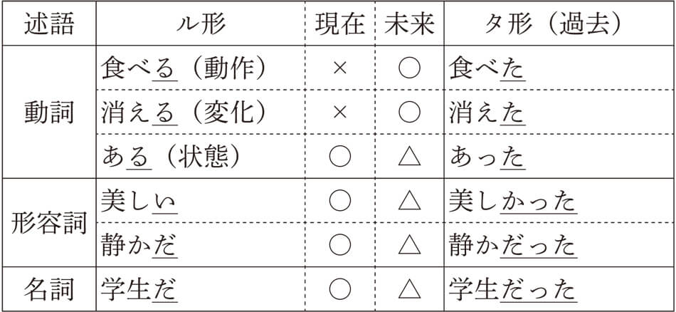動詞の「食べる」と「消える」がなぜ現在を表さないのか、合点のいかない人も多いでしょう。文法の世界ではこの「現在」「未来」という時間の枠をかなり厳格に規定します。
たとえば、「子供がお菓子を食べる」「電気が消える」という状況を考えてみましょう。両者とも現在の事態というよりも、これから起こる事態を表していませんか。その証拠に、目の前で見ることのできる現在の事態であれば、「子供がお菓子を食べている」「電気が消えている」というテイル形で表さなければならないからです。つまり、「お菓子を食べる」も「電気が消える」も厳密に考えると、今ではなく、今よりちょっと後の事態を表しているんです。
これに対し、「机の上に本がある」などの「ある」は本が存在する状態が今つづいていることを意味します。したがって、「本がある」は現在の事態を表すと言えます。このようなル形で現在の事態を表す動詞はそれほど多くなく、「ある」の他には「いる」「要る」「相当する」「値する」「存在する」「異なる」などがあり、状態動詞と呼ばれます。
形容詞や名詞述語のル形も基本的に現在の状態を表します。「山の景色が美しい」「今日の海は静かだ」「佐藤君はまだ学生だ」など、いずれもそのような事態が現在においてつづいていることを表しています。
ところで、このような静的な述語のル形ですが、未来の事態は△になっていますね。これはどういうことかと言うと、静的な事態は同じ状態が一定期間つづくことを意味しますので、近い未来であればその状態がそのままつづいていると考えられるからです。したがって、ル形で未来の事態としてもとらえることができます。「紅葉は明日が一番美しい」「予報によれば、明日の海も静かだ」「単位不足で来年も君はまだ学生だ」など、ル形で未来の事態を表すことが可能になるわけですね。
テンスはコトを形成する述語の一番後に現れる形式です。ボイスとアスペクトは動詞にしか現れませんでしたが、テンスはすべての述語に現れます。時間軸のなかで、述語が表す事態が過去に起きたか、現在起きているか、未来に起きるかを表します。私たちが過去、現在、未来と言うとき、それは話をするときを基準に考えています。この基準点を発話時と呼びます。私たちは、この「発話時」を基準に、それより前の事態であればタ形、同時またはそれより後の事態であればル形を使っているんですね。
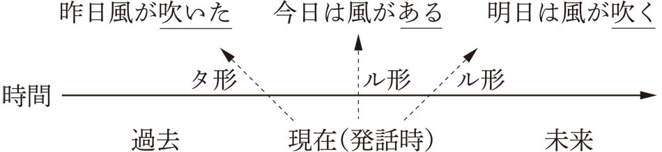このようなル形とタ形のあり方を絶対テンスと呼びます。私たちは、自分が描こうとする事態のテンスを「発話時」である現在を基準に決定しているわけです。いくつか例文を以下に挙げますね。
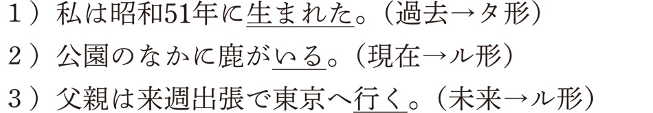このように、話者が話をしている時点を基準に、それより前か、同時か、後かと考えるのが絶対テンスなんです。この絶対テンスですべての文が説明できれば簡単なのですが、世の中そんなに甘くないのは、文法の世界でも同じです。ちょっと次の文を見てください。日本に留学する前に母国で友達が送別会を開いてくれたという文なんですが、日本語を学ぶ留学生がよく間違えるところなんですよ。
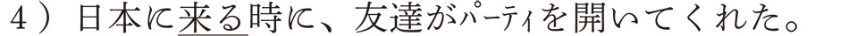留学生は「日本に来た時に、友達がパーティを開いてくれた」とすることが多いんですね。これは、私たちが英語を勉強したときに教わった「時制の一致」という考えです。「日本に来る」も「友達が送別会を開いてくれる」も過去の出来事であることから、両者とも過去形にしろというものですね。英語で表すと、“When I came to Japan, my friends held a farewell party for me.”とでもなるんでしょうか。ここで、読者の皆さんに質問です。４）の例文は過去の出来事にもかかわらず、日本語ではなぜ「来る」というル形が使われているんでしょうか。
この質問に明快に答えることができた人は、即、日本語の先生になれますよ。日本語教師なら、こういう質問を年がら年中外国人から受けているからです。おそらくほとんどの読者の方ははじめてこんな質問を受け、言われてみれば、どうして過去の出来事にもかかわらず、未来を表す「来る」を使っているんだろうと、真剣に悩んでいるかもしれませんね。これを説明するには今まで見てきた絶対テンスの考え方ではダメなんです。
そこで、登場するのが、相対テンスという考え方です。ただ、この相対テンスの考え方、ややこしくて、理解するのに時間がかかるので有名な文法項目なんです。私も10年以上、学生や一般社会人の方に教えていますが、最初の頃はなかなか理解してもらえなくて、苦労しました。でも、安心してください。だんだん説明するコツがわかってきましたから、この本ではたぶん大丈夫だと思います。
まず、相対テンスが現れるのは、２つ以上の文からできた文、これを複文と呼びますが、この複文に限られるということです。さっきの例文で言えば、「日本に来る（時に）」という文と「友達がパーティを開いてくれた」という２つの文があったでしょう。文のなかに文があるというのも変ですから、文のなかの文は節と呼ばれます。つまり、２つの節からできた文が複文ということになるわけです。この２つの節のなかで、主となる節を主節、従となる節を従属節と呼びます。先ほどの例文であれば、「日本に来る（時に）」が従属節で、「友達がパーティを開いてくれた」が主節となります。どっちが主節でどっちが従属節かわからない？ そう思う人もいるかもしれませんね。でも、大丈夫です。日本語の複文では必ず後の文が主節となります。ですから、相対テンスが現れるのは必ず前の節（従属節）なんですね。主節には現れません。なぜかというと、主節は文全体の出来事を表しますので、それが、過去なのか、現在なのか、未来なのかを明らかにする必要があるからなんですね。ですから、「友達がパーティを開いてくれた」と、主節にタ形が使われているのは、この出来事全体が過去に起きたことを示しているわけです。
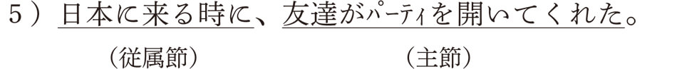絶対テンスが使われる主節に対して、従属節のテンスは相対テンスになります。ここからが重要です。絶対テンスではル形とタ形を決定する基準は「発話時」でしたね。
ところが、相対テンスは違うのです。では、どんな基準なのかというと、主節の事態が起きているときが基準点となるんです。どういうことかというと、直前の例文５）であれば「友達がパーティを開いてくれた」ときが基準点となっているわけです。その基準点を中心に、従属節の事態「日本に来る」が前に起きていればタ形が、同時か、後に起きていればル形になるというものです。ちょっとややこしいでしょう。時間軸を使って説明しますね。
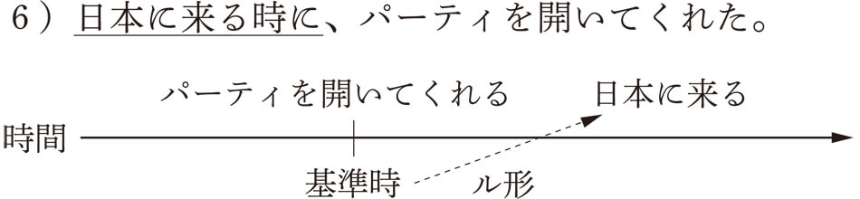つまり、「日本に来る」という従属節は、「パーティを開いてくれる」という主節のときより、後に起きることなので、ル形が使われているということなんです。でも、日本に友達がいて、日本に着いたら、友人が集まってパーティを開いてくれたなんてことも考えられますね。そうすると、今度は「日本に来た時に、友達がパーティを開いてくれた」と言えるわけです。この場合、パーティを開いたときにはすでに日本に来ているわけですので、タ形になると考えられるのです。
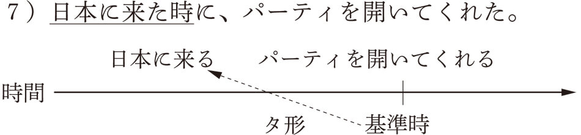これを理屈で考えようとすると、とても難しいです。でも、私たち日本人はこのような使い分けを無意識におこなっているんです。どうやっているかというと、視点を移しているんですね。
たとえば、日本に留学する前に友達が集まって送別会を開いてくれたという文であれば、送別会に参加している自分を想像してみてください。皆から祝福されながら、これから日本に来る（行く）という事実をかみしめているはずですよね。なので、「日本に来る（行く）時」というル形が使われるのです。反対に、日本に着いたら、友達が集まって歓迎会を開いてくれたとします。今度は歓迎会にいる自分に視点を移すんです。日本に着いたばかりの不安な気持ちは友達に会うことで軽くなっていますね。その歓迎会の時点から考えれば、「日本に来る」という事実はすでに実現しているわけですから、「日本に来た時」とタ形が使われるんです。
このように、前後関係のある２つの節からなる複文においては、従属節は相対テンスになるわけです。従属節は主節を補佐する成分ですので、主節を基準点にしたテンスになっているんです。相対テンスにはいろいろと複雑な面がありますが、本書の目的は一般の人に基本的なしくみをわかりやすく説明することにありますので、これ以上の深入りはしないことにします。興味のある方は、拙著『考えて、解いて、学ぶ 日本語教育の文法』を読んでください。
時間軸上の基準点を基に、それより前か、同時か、後かによって決定される文法形式がテンスでした。基準点が「発話時」なのか「主節時」なのかによって、絶対テンスと相対テンスに分かれましたね。いずれも基準点より前で起きていれば、タ形が、同時か後に起きれば、ル形が使われました。
では、次の言語現象はどのように考えたらいいでしょうか。「新聞を読んだか？」という質問に対して、否定形で答えるときの表現です。皆さんなら、どちらの答えを選ぶでしょうか。

８）ならAを、９）ならBを選んだはずです。不思議ですよね。両方とも「読みましたか？」と聞かれているのに、なぜ答えが異なってくるのでしょうか。じつは「読みました」と同じタ形が使われていますが、８）の「読みました」は現在完了形で、９）の「読みました」は過去形なのです。この「現在完了」という言葉、中学校の英語の教科書に出てきたものですね。ちょっと思い出してもらうためにも、この８）、９）の例文を英文にしてみましょう。
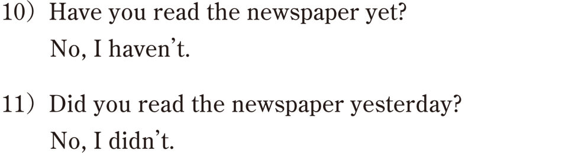英語では現在完了形と過去形は異なる形式で表されますが、日本語ではタ形で両方を表すことができるんです。ちなみに、日本語の現在完了形の否定は「～ていない」とテイル形が使われますので、注意してくださいね。
現在完了形には、過去の事態を現在とつなげてみる視点があります。これに対して、過去形はある事態が過去にあったかどうかだけを問題にするんですね。「新聞を読んだか？」の例で言えば、「もう新聞を読みましたか？」というのは、この質問をする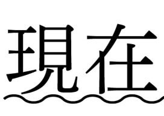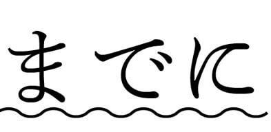、「新聞を読む」という行為が終わっているかどうかを聞いている質問です。これに対し、「昨日新聞を読みましたか？」という質問は、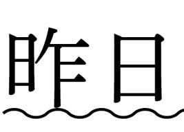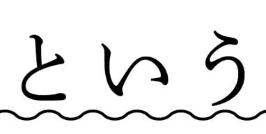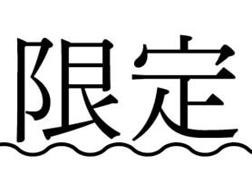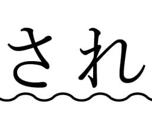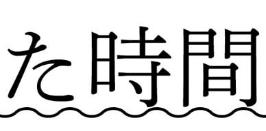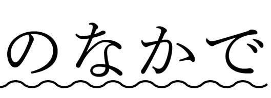、そのような行為があったかどうかを質問しているわけです。現在とのつながりの有無によって、現在完了形か過去形かに分かれるわけです。ただ、肯定形では両者とも「はい、新聞を読みました」と同じかたちになりますので、否定形にならないと両者の違いははっきりわかりません。現在完了形では、「もう」「すでに」「今」「ちょうど」など、現在とのつながりを示す副詞などと共起するのが特徴です。過去形では、「昨日」「去年」「２年前」「さっき」など、過去の時点を示す表現が使われます。
現在完了形は、動きの結果を表しているという点で、アスペクトの表現であると言えます。否定形にはテイル形が使われるのもそのためです。「もう新聞を読みましたか？」は「もう新聞を読んでいますか？」とテイル形で言い換えることも可能ですね。ただ、日本人の意識としては、過去でも現在完了でもどちらでもいいんです。発話の時点ですでに終わっていることに対して、タ形を使っているのであり、特に現在完了の意識があるわけではないんですね。
私たちが普段使っている言葉のなかには、よく考えたら変だなあと思うような表現がけっこうあります。これから紹介するタ形もそんな表現の一つです。皆さんなら、どのように考えますか。
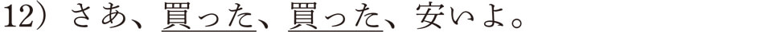八百屋か魚屋の店先で威勢のいい店員が大声で叫んでいる様子が目に浮かぶようですね。でもよく考えたら、この「買った」という表現、変ですよね。だって、まだ買ってないんですから。過去形でもないし、完了形でもないですね。複文でもないですから、相対テンスでも説明できません。じつは、この「買った」は、「買う」という行為がすでに実現したとすることで、相手を促す効果があるんですね。その他にも、「どいた、どいた！」や「食った、食った！」「飲んだ、飲んだ！」なんて、皆さんも使ったことがあるんじゃないでしょうか。このような表現は、私たちの認識と深く関わっていることから、話者の気持ちを表すムードの表現であると主張する学者もいます。この一風変わったタ形は、上に見るような相手を促すとき以外にも、まだまだあるんですよ。どれもこれも普段の生活でよく使っている表現ばかりです。
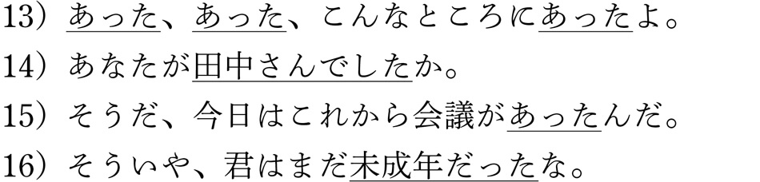13）は、本当なら「ある、ある」となるべきでしょう。探していたものが出てきたときに使う決まり文句ですね。「発見のタ」と呼ばれます。14）は、田中さんが誰なのかわからなくて、その疑問が解けたときなどに使いますね。その意味で、「発見のタ」と似ています。15）は、忘れていたことを思い出したときに使われますね。「想起のタ」と言われます。16）は、知っていることを確認するときに使われる「確認のタ」です。接客場面でよく使われる「ご注文は以上でよろしかったでしょうか」なども、以前に了解したことを確認しているわけです。間違った接客敬語であると批判されることもありますが、一度聞いたことを確認するために使っていると考えれば、決して間違った使い方ではないんですね。
この他にも、現在の状態でありながら、タ形を使う動詞に、内的状態動詞があります。この動詞は、話し手の心の状態を表す動詞なのですが、この動詞の一部が、タ形で現在の心の状態を表すんですね。たとえば、こんな感じです。
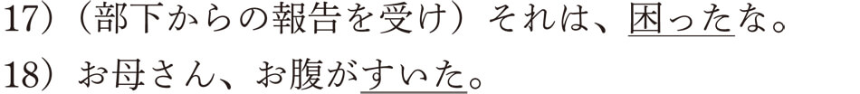17）は、部下からの報告に困っている様子を、18）はお腹がすいている状態を表しています。いずれもタ形でありながら過去の事態を表しているのではなく、現在の心の状態を表しています。この種の動詞の数はそれほど多くありませんが、日常的な表現によく使われるのが特徴です。その他にも、「あきれた」「安心した」「びっくりした」「驚いた」「ほっとした」「疲れた」「しびれた」「（のどが）渇いた」「（腹が）減った」などがあります。
このように、ここで扱った状況はすべて、現在または未来の出来事ですので、本来であればル形で表されるべきものですが、話者の認識が関わることで、このような特殊な表現になっているんです。
以上でテンスは終わりです。このテンスが述語の最後につくことで、文の骨格であるコトが完成します。このコトをどのように聞き手に伝えるのかというのが、次章で説明するムードになります。
▲